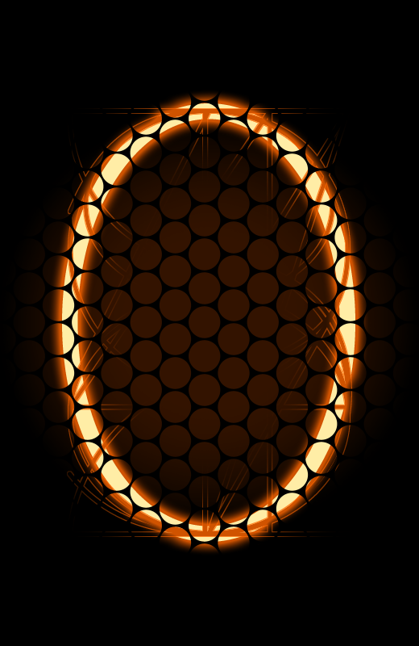

Example Counter Display
This is how the counter looks with a value of 000001:

After a few visits, it might look like this (000042):
For a popular profile (123456):
How to Use in Your README
To use the counter in your GitHub profile README, add the following code:

For testing locally:

Customization Options
Change the number of digits (default is 6):

Set a starting base count: